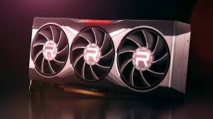
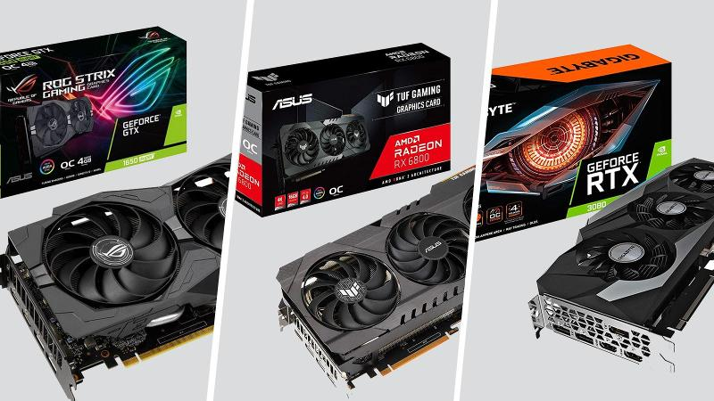

La tarjeta gráfica o tarjeta de vídeo de un componente que viene integrado en la placa base del PC o se instala a parte para ampliar sus capacidades. Concretamente, esta tarjeta está dedicada al procesamiento de datos relacionados con el vídeo y las imágenes que se están reproduciendo en el ordenador.
Cómo saber qué tarjeta gráfica tiene tu PC
EN XATAKA
Cómo saber qué tarjeta gráfica tiene tu PC
Todas las imágenes que ves en el monitor de tu ordenador, desde los gráficos de un videojuego hasta lo que escribes en Word, requieren ser procesadas por el ordenador. Las tarjetas gráficas obtienen esos datos que le envía el procesador del ordenador, y los transforma en información visual, lo que quiere decir que coge datos que son unos y ceros y los convierte en imágenes.
Hay dos tipos de tarjetas gráficas, las integradas que van acopladas al propio procesador como una parte de este, y las dedicadas que puedes conectar a parte en el ordenador como si fueran una unidad externa en la que la CPU puede apoyarse para tareas especialmente exigentes. En ambos casos, la gráfica conectará directamente con el monitor para enviarle los datos.
Uno de los aspectos por los que las tarjetas gráficas cobran más importancia es por lo exigente que puede ser el procesado de datos visuales en los videojuegos y la edición de vídeo o fotografía. En estos casos, sobre todo en la edición de vídeo de altas resoluciones y la de juegos de última generación, suele tocar recurrir a una tarjeta gráfica externa lo más potente posible.
¿Y por qué? Pues porque las tarjetas gráficas que vienen integradas en los procesadores están pensadas para las tareas más comunes del ordenador, como la navegación por internet o los procesados de imagen más sencillos. Para tareas más pesadas, el procesador necesitará una potencia gráfica, y para ofrecerla y no sobrecargarlo es por lo que se deriva el procesado a las tarjetas externas si las hubiera

tipos de tarjetas gráficas
ntre los principales tipos de tarjetas gráficas, se encuentran:
Tarjeta MDA
su nombre proviene de “Monochrome Display Adapter”, comercializada por la empresa IBM como una memoria de 4 KiB exclusivamente para monitores, no tenía ninguna opción de configuración y no disponía de gráficos, simplemente presentaba resolución en modo texto 80×25 píxeles en caracteres de 14×9 puntos.
Tarjeta CGA
su nombre responde a las siglas de “Colors Graphics Array” y también fue comercializada por IBM en el año 1981. Esta tarjeta gráfica da un salto de calidad en cuanto a resolución, era capaz de alcanzar una resolución de hasta 640×200 píxeles con una memoria de 16 KiB frente a los 4KiB de su antecesora.
En cuanto a color, era capaz de representar ocho colores diferentes con dos niveles de intensidad cada uno, sin embargo, presentaban un extendido error, el conocido como efecto nieve. Este problema derivaba en que aparecían puntos brillantes e intermitentes en la imagen, con la consecuencia de que esta se distorsionaba.
Tarjeta HGC
La tarjeta “Hércules Graphic Card” la inventó la empresa Hércules en el año 1982. Este nuevo componente mejoraba la resolución de la CGA alcanzando los 720×348 píxeles y 64 KiB de memoria. Su principal desventaja era la falta de color.
Principales marcas y modelos
¿Cuáles son las principales marcas y modelos? Te lo contamos a continuación:
ATI
Actualmente pertenece a la compañía AMD. ATI comenzó con la producción de tarjetas gráficas en el año 1985. Unos años más tarde, en 1997, crea su modelo Rage II, un chip con aceleración 3D que se hizo con el mercado internacional. A partir de ese momento, fue mejorando el modelo inicial y aumentando el número de opciones para que el cliente pudiese elegir cual se adaptaba mejor a sus necesidades:
Rage 128 GL.
Rage 128 Pro.
R100 y posteriores.
Radeon Mobility.
Radeon FireGL.

¿Qué tipo de desgaste produce el uso y el paso del tiempo en una tarjeta gráfica?
Los componentes electrónicos funcionan, valga la redundancia, con electricidad; hacer pasar electricidad por ellos produce irremediablemente calor puesto que no toda la energía se aprovecha (no existe el 100% de eficiencia en este mundo) y se libera en forma de calor, y el calor produce un nivel de desgaste mayor. Las tarjetas gráficas no están fabricadas enteramente por componentes inertes, sino que emplean algunos componentes orgánicos (principalmente, químicos) que son precisamente los que se descomponen a causa del calor.
Por ejemplo, uno de los elementos que va perdiendo sus propiedades con el paso del tiempo es la pasta térmica encargada de hacer que el calor que produce la GPU se transmita al disipador de la tarjeta gráfica para poder evacuarlo; con el paso del tiempo, la eficacia de la pasta térmica irá en detrimento provocando que la GPU cada vez funcione a una mayor temperatura, y haciendo así que algunos componentes -muy especialmente los condensadores porque son los más proclives a dar problemas por altas temperaturas- se desgasten.
En un circuito electrónico, la principal función de los condensadores es la de filtrar la energía, de manera que aunque se reciba más de la que se necesita, acumulan el exceso para entregar al componente solo la que necesita; igual que hemos explicado antes, el exceso se libera en forma de calor. En los condensadores, el calor hace que cada vez sean menos eficientes, lo que significa que regulan peor el voltaje que entregan y que como pierden capacidad, liberan cada vez más exceso en forma de calor, es decir, que la cosa cada vez va a peor una vez que llegan a cierto punto.
Igualmente, hay que tener en cuenta el desgaste que tienen los ventiladores del disipador de la gráfica; el desgaste de éstos suele ser bastante bajo ya que por norma general funcionan con rodamientos lubricados, pero al final con el paso del tiempo y la temperatura el lubricante termina perdiendo también sus propiedades, haciendo que los ventiladores generen rozamiento, ruido y desgaste, por lo que cada vez funcionarán peor. A este respecto hay que decir que pasará muchísimo más tiempo hasta notar los síntomas.